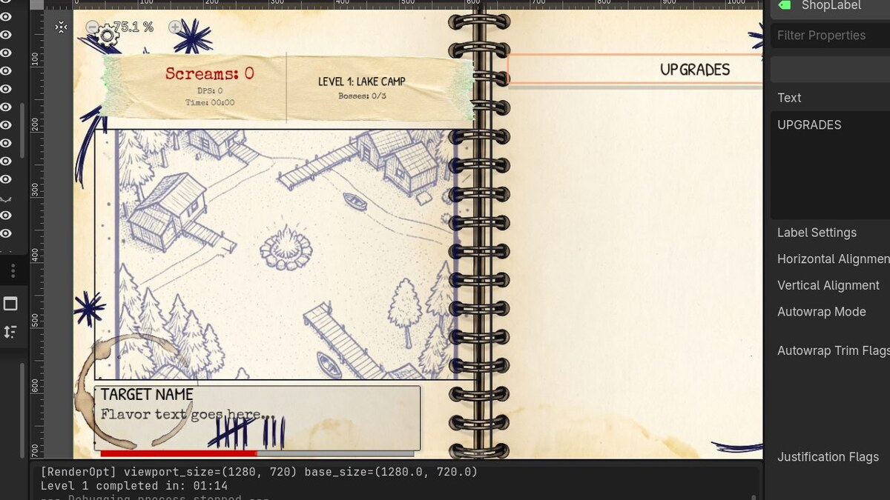
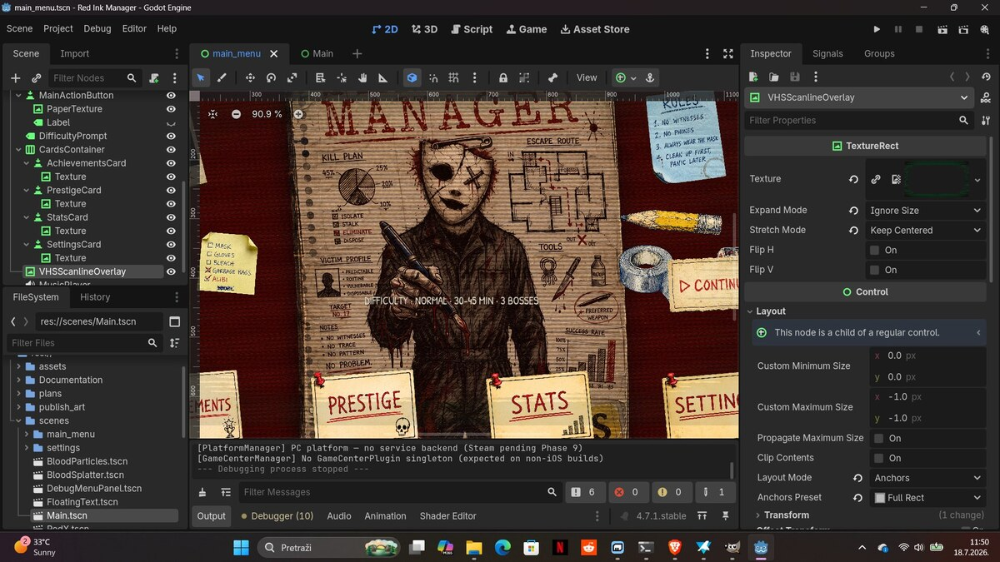

BUILDING IN PUBLIC
Solo development log for Slasher Manager and other projects. Updates on what shipped, what's broken, and where the design is going.

Devlog #02
Responsive UI Complete + Shop Upgrade
Landscape pivot finalization (0 free-standing Position nodes) and shop density upgrade — ScrollContainer with affordability sort, 6 displayed upgrades per refresh. Same pattern as Cookie Clicker and Egg Inc.

Devlog #01
Main Menu Reveal
A full visual overhaul of the main menu blending VHS horror with hand-drawn ink-and-paper notebook aesthetics. The masked figure, scattered index cards, and VHS scanline overlay explained.